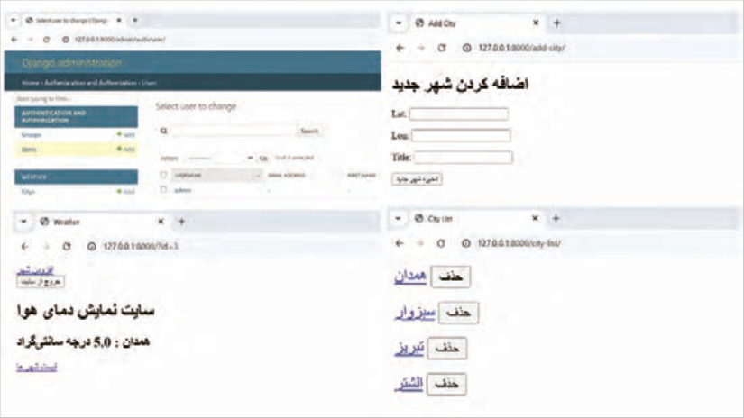
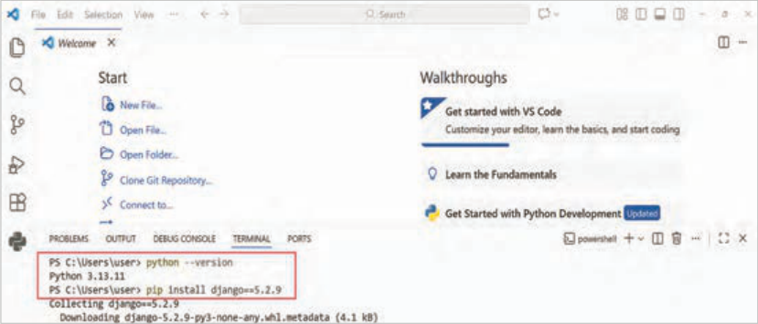
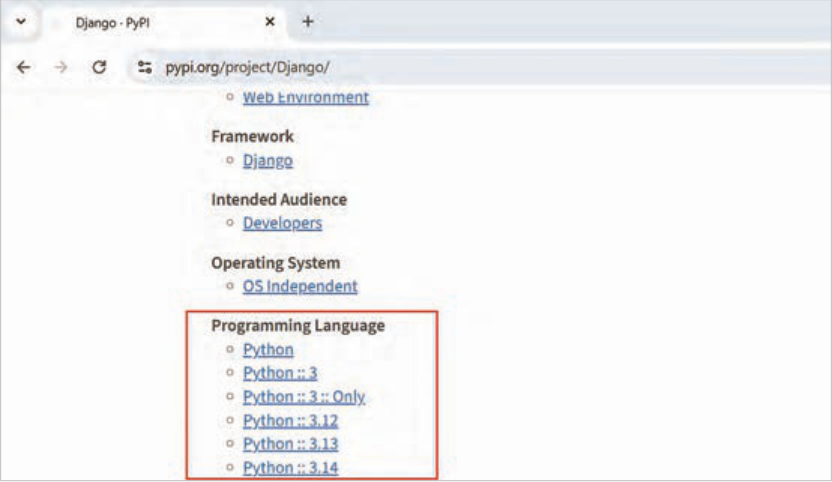

جنگو چیست و نصب
ایجاد وب اپلیکیشن
صفحه ۲۷۶
واحد یادگیری ١
ایجاد وب اپلیکیشن
آیا تابهحال اندیشیدهاید
وب سایت با وب اپلیکیشن چه تفاوتهایی دارد؟
چگونه میتوانید یک وب اپلیکیشن بسازید؟
یک وب اپلیکیشن چطور با کاربر تعامل میکند؟
در پایان از هنرجو انتظار میرود
1 با مزایای جنگو آشنا شود.
2 ساختار یک پروژه جنگو را درک کند.
3 روند کار جنگو، جهت تعامل با کاربر را درک کرده و درباره آن استدلال نماید.
4 مفهوم url ،view و template در جنگو را درک کند.
5 هنرجو بتواند بهصورت عملی یک وب اپلیکیشن ساده را پیادهسازی کند.
استاندارد عملکرد
هنرجو باید با درک صحیحی که از ساختار جنگو کسب کرده است، بتواند یک وب اپلیکیشن ساده را در رایانه خود پیادهسازی کند.
صفحه ۲۷۷
جنگو چیست؟
جنگو (Django) یک framework منبعباز (open source) است که با زبان برنامهنویسی Python نوشته و برای ساخت و پیادهسازی بخش backend وبسایتها (Website) و وب اپلیکیشنها (Web Application) استفاده میشود.
جدول 1 مقایسه وبسایت و وب اپلیکیشن
معیار
وبسایت (Website)
وب اپلیکیشن (Web Application)
هدف اصلی
اطلاعرسانی و نمایش محتوا
انجام عملیات و پردازش داده
تعامل کاربر
کم یا تقریبًا یکطرفه
زیاد و دوطرفه
نیاز به لاگین
معموًلا ندارد
معموًلا دارد
پردازش سمت سرور
کم
زیاد
وابستگی به backend
کم یا متوسط
بسیار زیاد
تغییر محتوا توسط کاربر
معموًلا ندارد
دارد
مثالها
سایت خبری، سایت شرکتی، بلاگپنل کاربری، فروشگاه آنلاین، سامانه
آموزشی
مزایای جنگو جنگو یک framework امن و سریع است که قابلیتهای آمادۀ زیادی را در اختیار برنامهنویس قرار میدهد.
به همین دلیل، سرعت توسعۀ نرمافزار در جنگو بسیار بالاست.
در پروژههای جنگو، با افزایش تعداد کاربران نیز میتوان تنها با اعمال تغییراتی اندک، همچنان یک وبسایت سریع و امن داشت.
یکی دیگر از مزایای جنگو، وجود مستندات (راهنمای) جامع و همچنین یک جامعۀ بزرگ و فعال از برنامهنویسان است. این یعنی اگر هنگام کار با جنگو با مشکلی مواجه شوید، با یک جستوجوی ساده در اینترنت میتوانید راهحلها و توضیحات زیادی از سوی برنامهنویسان دیگر پیدا کنید.
از دیگر مزیتهای مهم جنگو، وجود فرصتهای شغلی فراوان در حوزۀ پایتون و framework جنگو است که آن را به گزینهای مناسب برای یادگیری و ورود به بازار کار تبدیل میکند.
شرکتهای بزرگی در دنیا و ایران از
شکل 1 شرکتهایی که از جنگو استفاده کردهاند
جنگو استفاده کردهاند.
صفحه ۲۷۸
کنجکاوی
در مورد شرکتهای ذکر شده تحقیق کنید.
پروژه نهایی این کتاب در پایان این کتاب، با استفاده از جنگو یک وب اپلیکیشن واقعی نمایش وضعیت آبوهوا طراحی خواهد شد (شکل 2).
در این پروژه کاربر میتواند نام یک شهر را جهت نمایش وضعیت آبوهوا انتخاب و مشاهده نماید.
این وب اپلیکیشن اطلاعات آبوهوا را بهصورت آنلاین دریافت کرده و نتیجه را بهصورت لحظهای نمایش میدهد.
پروژه به شما کمک میکند یاد بگیرید جنگو در عمل چگونه کار میکند و یک وبسایت چگونه ساخته میشود.

شکل 2 بخشهایی از پروژه نهایی
نصب جنگو ابتدا مطمئن شوید آخرین نسخه پایتون روی رایانه شما نصب باشد و رایانه به اینترنت متصل باشد. برای این کار وارد برنامه Vscode شده اگر از قبل فایل یا پوشهای باز بود با دستور Close Folder از منوی File آن را ببندید سپس از منوی terminal، یک ترمینال جدید باز کنید.
در ادامه همانند شکل 3 درون قسمت ترمینال دستورات را بهترتیب اجرا نمایید.
صفحه ۲۷۹

شکل 3 نصب جنگو نسخه5.2.9
نمایش پیام Successfully installed Django-5.2.9 نشاندهنده نصب موفقیتآمیز جنگو است.
درصورتیکه پیغام نصب موفقیتآمیز جنگو را مشاهده نکردید، از هنرآموز خود راهنمایی بگیرید.
میتوانید آخرین نسخه منتشر شده جنگو را هم نصب کنید، فقط باید در سایت pypi.org و صفحه جنگو، نسخه پایتون سازگار را بهدست آورید.
وارد آدرس https://pypi.org/project/Django شوید و در بخش Programming Language نسخههای
پایتون پشتیبانی شده جنگو را مشاهده کنید (شکل 4).

شکل 4 نسخههای پایتون مناسب برای جنگو
Creating a web application
Page 276
Learning unit 1
Creating a web application
Have you ever thought
What differences does a website have from a web application?
How can you build a web application?
How does a web application interact with the user?
By the end, the student is expected to
1 Become familiar with the advantages of Django.
2 Understand the structure of a Django project.
3 Understand Django’s process for interacting with the user and reason about it.
4 Understand the concepts of url, view, and template in Django.
5 Be able to implement a simple web application in practice.
The student, with a correct understanding of Django’s structure, should be able to implement a simple web application on their own computer.
Page 277
What is Django?
Django (Django) is an open-source (open source) framework written in the Python programming language and used to build and implement the backend of websites (Website) and web applications (Web Application).
Table 1 Comparison of a website and a web application
Criterion
Website (Website)
وب اپلیکیشن (Web Application)
Main purpose
Informing and displaying content
Carrying out operations and processing data
User interaction
Little or almost one-way
Much and two-way
Need for login
Usually does not have
Usually has
Server-side processing
Little
Much
Dependence on the backend
Little or medium
Very much
Change of content by the user
Usually does not have
Has
Examples
News site, company site, blog User panel, online store, educational
system
Advantages of Django Django is a secure and fast framework that puts many ready-made capabilities at the programmer’s disposal.
For this reason, the speed of software development in Django is very high.
In Django projects, as the number of users increases, you can still have a fast and secure website by making only a few changes.
Another advantage of Django is the existence of comprehensive documentation (guides) as well as a large and active community of programmers. This means that if you face a problem while working with Django, with a simple search on the internet you can find many solutions and explanations from other programmers.
Another important advantage of Django is the many job opportunities in the field of Python and the Django framework, which makes it a suitable option for learning and entering the job market.
Large companies in the world and in Iran have
Figure 1 Companies that have used Django
used Django.
Page 278
Try this
Research the companies mentioned.
Final project of this book At the end of this book, using Django, a real web application for displaying weather status will be designed (Figure 2).
In this project the user can select the name of a city to display the weather status and view it.
This web application receives weather information online and displays the result in real time.
The project helps you learn how Django works in practice and how a website is built.
Figure 2 Parts of the final project
Installing Django First make sure the latest version of Python is installed on your computer and that the computer is connected to the internet. To do this, enter the Vscode program; if a file or folder was already open, close it with the Close Folder command from the File menu, then from the terminal menu open a new terminal.
Then, as in Figure 3, run the commands in order in the terminal section.
Page 279
Figure 3 Installing Django version 5.2.9
Displaying the message Successfully installed Django-5.2.9 indicates that Django has been installed successfully.
If you do not see the message that Django was installed successfully, get guidance from your teacher.
You can also install the latest released version of Django; you only need to find the compatible Python version on the pypi.org site and the Django page.
وارد آدرس https://pypi.org/project/Django شوید و در بخش Programming Language نسخههای
Observe the Python versions supported by Django (Figure 4).
Figure 4 Suitable Python versions for Django